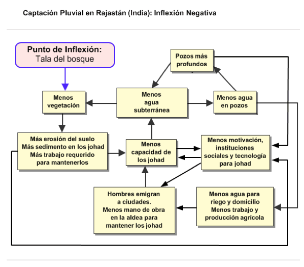
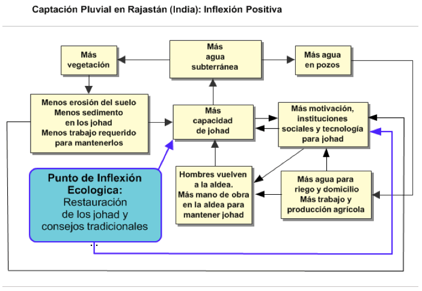
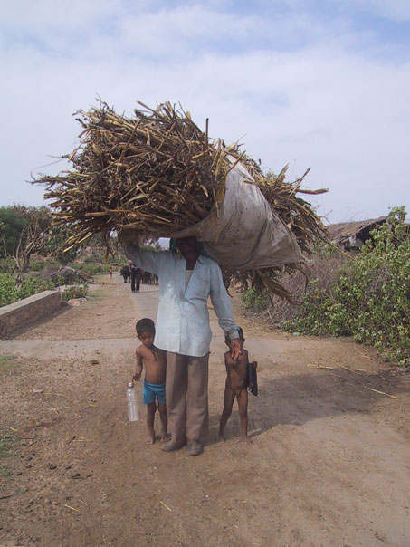
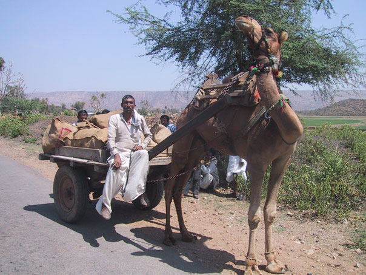

|
 |
 |
Puntos de
Inflexión Ecológica
- Cómo funcionan?
- Transformando círculos viciosos a círculos virtuosos
- Ingredientes para el éxito
- Elaboren sus propios Puntos de Inflexión Ecológica
Historias por Región
Historias por Tema
- Agricultura
- Agua y Cuencas
- Bosques
- Ecosistemas Urbanos
- Educación
- Energía
- Negocios
- Pesquerías
- Salud Pública
Videos Cortos
- Salvando un arrecife coral y una pesquería
(Filipinas) - Revitalizando vecindades urbanas con jardines comunitarios
(Nueva York) - Revirtiendo la deforestación tropical con bosques comunitarios
(Thailandia) - Rellenando aguas subterráneas con captación pluvial
(Rajastán, India) - Escapando la trampa de pesticidas
(India)
Explicando el Éxito
- Salvando un arrecife coral y una pesquería
(Filipinas) - Revitalizando vecindades urbanas con jardines comunitarios
(Nueva York) - Revirtiendo la deforestación tropical con bosques comunitarios
(Thailandia) - Rellenando aguas subterráneas con captación pluvial
(Rajastán, India) - Escapando la trampa de pesticidas
(India)

Ecología Humana: Presenta los principios de la ecología humana que sirven de fundamento a los Puntos de Inflexión Ecológica
India - Rajastán - Guerreros de Agua: Restaurando Presas Tradicionales, Captando Lluvia y Rellenando Aguas Subterráneas
- Autores: Amanda Suutari y Gerry Marten
- Asistencia en la visita al sitio y aportaciones editoriales: Ann Marten
- Materias educativas para este caso (Español) – Plan de estudios, narrativas, fotos, PowerPoint, ejercicios para estudiantes y notas para maestros
- Informe completo de esta historia (Inglés): Amanda Suutari
- Video de esta historia (11 minutos)
- Fotogalería de esta historia
- Esta historia se publicó en Puntos de Inflexión Ecológica: Una Nueva Perspectiva en el Ambientalismo Estratégico (WorldWatch magazine)
Los pozos del distrito de Alwar, en Rajastán se habían secado, arrastrando a su gente a una pobreza extrema y aparentemente sin remedio. La recuperación de presas tradicionales de captación pluvial para recargar el manto acuífero fue el punto de inflexión que resucitó los pozos. Y con el agua regresó una mejor vida para los habitantes. El proceso comenzó en un la humilde aldea de Gopalpura, y actualmente cerca de mil aldeas han seguido su ejemplo.
El agua siempre ha escaseado en el distrito Alwar del Rajastán, en la India. Caen apenas 40 centímetros de lluvia cada año, la mayoría durante los tres meses del monzón (de Julio a Septiembre), dejando la tierra sedienta durante el resto del año. Pero a lo largo de miles de años los agricultores aprendieron como aprovechar cada gota al máximo. Los antiguos textos Hindúes mencionan la tecnología clave para gestionar el agua: la captación pluvial. A lo largo y ancho de toda la India se construyeron estructuras para captar y retener las lluvias del monzón y almacenarlas para la época de sequía. Los arqueólogos dicen que algunas de estas estructuras datan del 1500 A.C.
En el Rajastán, la estructura dominante era el johad, una presa de tierra y piedras con forma de media luna para interceptar el agua de lluvia que bajaba de las laderas. El johad cumple dos funciones. En la superficie, almacena agua para el ganado. Pero al igual que un témpano de hielo, su mayor parte está bajo la superficie. Al retener agua, permite que el líquido se filtre por la tierra, recargando el manto acuífero a distancias de hasta un kilómetro de distancia del johad. Almacenada bajo tierra, el agua no se evapora. Sin tuberías ni canales, los aldeanos siempre podían depender de agua de sus pozos y manantiales. La irrigación hacía posible la agricultura durante todo el año.
Una familia no podía construir un johad. Pero ya que todos los aldeanos beneficiaban de ellos, se unían para construirlos y mantenerlos. Los rajas, reyes de pequeños estados quienes dieron su nombre a la región, frecuentemente financiaban su construcción a cambio de un pequeño porcentaje de las cosechas. Las instituciones comunitarias se extendían hacia otros recursos compartidos, como los árboles. Los aldeanos regulaban la tala de árboles para la leña.
Secando el acuífero
Tras siglos de relativa estabilidad, el contrato social alrededor del agua y los árboles comenzó a erosionarse cuando Gran Bretaña consolidó su control sobre la India a finales del siglo X!X. Las empresas Británicas necesitaban maderas, y demasiados rajas estaba dispuestos a dárselas. Primero prohibieron el acceso a los bosques a los aldeanos que durante generaciones habían cuidado de ellos. Después vendieron los derechos de tala a las empresas. El distrito de Alwar mantuvo sus bosques hasta finales de los 1940s, cuando la India logro su independencia y el rajá vendió los derechos de tala a las empresas temeroso de que pudiera perder sus tierras al nuevo gobierno nacional. Los venerados árboles terminaron como carbón y durmientes.
Esta tala comercial puso en marcha una reacción en cadena en que la destrucción de un recurso llevo a la destrucción de otro, y el empobrecimiento de la naturaleza llevó al empobrecimiento de la población. Primero la tierra fue arrastrada de las laderas deforestadas y depositada en los johad. Antaño quizá la población hubiera mantenido y reconstruido sus represas. Pero al grado que el gobierno tomaba posesión de más y más de sus tierras comunes, tuvieron menos y menos incentivo para proteger lo que les quedaba. Los consejos tradicionales en que participaban todas las familias, llamados gram sabhas, cayeron en desuso y se perdió la tradición del trabajo comunitario. Donde antes los agricultores compartían la labor de gestionar sus recursos, ahora competían por los pocos que quedaban. “Tras la independencia se colapsó la solidaridad de la aldea, y la gente descuidó sus estructuras (johad), porque solo pueden construirse por grupos, no por individuos. Así, uno por uno, las estructuras deterioraron y dejaron de funcionar”, recuerda el anciano Mangu Patel.
Con menos johad con que recargar el acuífero, comenzaron a secarse los pozos. Pero el deterioro de los johad parecía ser inconsecuente una vez que se introdujo la tecnología de perforación y bombeo de agua en los 1950s. Si se agotaba un pozo al retirarse el manto acuífero, bastaba con perforar a mayor profundidad. Esto se lograba fácilmente con el equipo de perforación y requería mucho menos trabajo que mantener los johad removiendo la sedimentación.
El deterioro y pérdida de los johad fue acelerado por círculos viciosos. Se perforaba cada vez a mayor profundidad, extrayendo más agua. El manto acuífero cayó aún más, requiriendo de pozos cada vez más profundos. La caída del agua subterránea repercutió en la desaparición de árboles y vegetación cuyas raíces ya no alcanzaban el agua, acelerando la erosión y llenando los johad restantes con sedimento. Con menos plantas hubo menos transpiración vegetal, resultando en menos lluvias. La temporada del monzón se acortó, de 101 días en 1973 a 55 días en 1987. Eventualmente todos los pozos, e incluso algunos arroyos y ríos se secaron en un área de varios miles de kilómetros cuadrados. Disminuyó la ganadería y desapareció la fauna nativa característica de la región, tal como antílopes y leopardos.
Los pozos ya no permitían irrigar los cultivos durante la época de secas, y la agricultura se redujo a una sola cosecha por año, durante las lluvias. Los hombres migraron a las ciudades en busca del trabajo, reduciendo la mano de obra disponible para mantener los johad. Con los pozos secos y los árboles desaparecidos, las mujeres y niños tuvieron que caminar hasta 10 horas al día en busca de leña y agua, dejándoles poco tiempo para la educación o cualquier otra actividad.
Transformando el deterioro en restauración
Para 1985 ya no había johad en la aldea de Golpapura, cuando arribaron cinco jóvenes voluntarios de una organización llamada Tarun Bharat Sangh (TBS) dedicada a erradicar la pobreza. Uno de ellos, un médico de nombre Rajendra Singh, tenía esperanzas de abrir una clínica. Pero Mangu Patel le dijo que la necesidad más urgente era de agua. Siguiendo el conselo de Patel, Singh y sus colegas comenzaron a restaurar un viejo johad. Siete meses después, la fosa tras la presa tenía 5 metros de profundidad. Al llegar las lluvias no solo se llenó hasta el borde, sino que un manantial cercano que había secado hace tiempo comenzó a manar agua otra vez.
Al año siguiente todo el pueblo se unió para restaurar una dilapidada presa de 6 metros de altura y 400 metros de longitud. Aunque Golpapura ya tenía un consejo (pancaharat) bajo el moderno sistema político nacional, los aldeanos revivieron el tradicional consejo gram sabah para administrar la construcción y mantenimiento de los johad, porque la participación total de la ciudadanía del gram sabah se prestaba más a este propósito. La TBS ayudó a obtener la asistencia técnica necesaria, los aldeanos contribuyeron un total de 10,000 días de trabajo y los más ricos donaron alimentos para los trabajadores.
Para 1996 Golpapura había recreado nueve johad, con extensión de 964 hectáreas y capacidad de 616 millones de litros de agua. El manto acuífero subió de una profundidad promedio de 14 metros bajo tierra, a 6.7 metros. Los pozos se llenaron. “Es como un banco”, dice Rajendra Singh. “Si depositas de manera regular, siempre podrás hacer retiros. Pero si tan solo retiras, pronto agotarás la cuenta.” En los mapas del gobierno la zona cambió de color oscuro a blanco, indicando un excedente de agua subterránea.
La recuperación del manto acuífero repercutió en la economía local. Con mayor humedad en el subsuelo hizo falta menos irrigación. Porque el agua estaba a menor profundidad, se requirió menos combustible para las bombas, y este gasto disminuyó en un 75%. Las hectáreas de cultivo de trigo crecieron de 33 a 108, y algunos campesinos diversificaron con caña de azúcar, papas y cebollas. Regresaron aldeanos de las ciudades. Junto con las mejoras en la dieta humana, mejoró la del ganado. Había más hojarasca para los borregos, cabras y vacas, lo cual aumentó la producción de lácteos.
La restauración de los johad de Golpapura demuestra como la palanca adecuada- la acción catalítica indicada- puede transformar un círculo vicioso en uno “virtuoso”. Tras años de extraer demasiada agua del suelo, los campesinos comenzaron a regresarla. Los círculos virtuosos que siguieron fueron la inversa de los círculos viciosos previos:
- La resurrección de pozos y manantiales motivó a la construcción de más johad, reviviendo aún más pozos y manantiales.
- Al subir el manto acuífero pudo mantenerse la cubierta de árboles y vegetación que evitan la erosión, ayudando a proteger los johad de la sedimentación.
- Al regresar los emigrantes a las aldeas, hubo más mano de obra para construir y mantener nuevos johad.
- Los éxitos de la solidaridad fortalecieron las instituciones sociales, inspirando más acciones comunitarias.
Beneficios derivados que amarran el éxito
Con la cercanía del agua y la leña, las mujeres tuvieron tiempo para organizar cooperativas de productos lácteos, artesanías y jabones. Los niños pudieron regresar a la escuela. “Ahora tenemos dos escuelas,” dice la anciana Manbhar Devi del pueblo vecino de Bhaonta-Kolyala, “para niños pequeños y mayores. En ese entonces (previo a la captación pluvial), ni una sola niña iba a la escuela. Sus padres no lo permitían. Ahora todas las familias envían tanto a niños como a niñas a la escuela, y por lo menos pueden terminar la primaria aquí en la aldea.”
Motivados por su éxito, el consejo gram sabha decidió reforestar 10 hectáreas a orillas del pueblo de Golpapura e implementaron medidas estrictas para su uso. Las familias podían cortar ramas secas para leña, pero eran multadas si cortaban ramas aún verdes. Para recalcar su compromiso con los árboles, los residentes ataron rakhis, brazaletes de parentesco, alrededor de los troncos, como símbolo de protección familiar.
Testigos del renacimiento de Gopalpura, otras aldeas buscaron el apoyo de TBS para restaurar sus propias estructuras de captación pluvial. TBS brindó asistencia técnica y de organización, pero tan solo después de celebrar un contrato estricto con cada aldea respecto al dinero y la mano de obra que los residentes aportarían al proyecto para garantizar su éxito. Para el 2005 había más de 5,000 johad en 750 aldeas, en un área de 8,000 kilómetros cuadrados. Un sondeo de 970 manantiales mostró que todos tenían agua- incluso 800 que tan solo 6 años antes estaban secos. La cubierta forestal del distrito de Alwar creció 33% en 15 años, se rescataron 5 ríos que habían secado, resucitando al mismo tiempo el hábitat de fauna rara vez vista, como los leopardos y antílopes.
Pero lo más importante es que los campesinos de Alwar se organizaron para proteger sus logros. Dado que el agua subterránea y los bosques de la India están bajo el control de las autoridades estatales y nacionales, TBS y los líderes de las aldeas fueron amenazados con prisión por “tomar la ley en sus manos” con sus programas de gestión de agua y bosques. Pero los aldeanos perseveraron. Cuando las autoridades estatales intentaron tallar bosques o destruir sus johad para demostrar su poderío, los aldeanos los obligaron a ceder, a veces con plantones en el sitio. Cuando el gobierno vendió los derechos de pesca comercial al rescatado rio Arvari, 70 aldeas se organizaron para devolverle estos derechos al pueblo. Los residentes de la Reserva del Tigre de Sariska demandaron exitosamente para expulsar a la “mafia del mármol”, cuyas minas clandestinas agotaban y contaminaban sus aguas.
Maulik Sisotia, voluntario del TBS, resumió como la auténtica participación ciudadana puede impulsar la restauración ambiental y social de manera realmente sustentable: “La gente siente “Hemos dado nuestro trabajo, es nuestro.” Así que lo mantienen de manera regular, y tienen un sentido de propiedad. Es natural. Si participas en algo, lo cuidas para que no sea dañado.”
Referencias
- "Sacred Water and Sanctified Vegetation: Tanks and Trees in India." Pandey, Deep Narayan, Indian Forest Service, 2000.
- "Johad: Putting Tradition Back into Practice." UN Inter-Agency Working Group on Water and Environmental Sanitation, 1998.
- "The Promotion of Community Self-Reliance: Tarun Bharat Sangh in Action." Dr. Margaret Khalakdina, OXFAM India Trust, 1998.
- "Regenerating of Forest." Professor Mohan Shrotriya, TBS, 1998.
- Parmar, Aradhana. "Health and Clean Water: Rainwater Retention Helps Green Rajasthan." 2003. Women and Environments, Online link
- Shresth, Swati. "Forest Conservation and Water Harvesting in Bhaonta-Kolyala Villages, Rajasthan, India." 2000. Online link
- Infochange Water Resources Homepage Archives. "India In For Severe Water Crisis: Planning Commission." Online link
- Kothari, Ashish. "Bhaonta: A village Wildlife Sanctuary." The Hindu Survey of the Environment, 1999. Online link
- Sebastian, Sunny. "The Water Man of Rajasthan." Frontline, Volume 18, Issue 17 (August 18-31, 2001).
- Kalyani. "Water Crisis Threatens India, Warn Experts." One World South Asia. Online link
- McCulley, Patrick. "Rainwater Harvesting Transforms Lives." The International Institute for Sustainable Development. Online link
- Jaitly, Ashok. "India's Water Crisis." Business India, 8-21 December 2003. Online link
- Maps of Rajasthan and its districts
- Tarun Bharat Sangh (TBS)
- Rajendra Singh, Avari - The river - A peoples movement (Rajasthan rainwater harvest) Online link
- Anil Agarwal et al., 2001, Making Water Everybody's Business: Water Harvesting in a New Age, Center for Science and Environment (Delhi, India). Online link
Análisis con Respecto a los Circuitos de Retroalimentación
- Autor: Gerry Marten
Un Punto de Inflexión Ecológica es una palanca que revierte el deterioro ambiental, poniendo en marcha la restauración y la sustentabilidad. Los Puntos de Inflexión Ecológica hacen esto al transformar los circuitos de retroalimentación (círculos viciosos) responsables del deterioro ambiental en círculos virtuosos que promueven la restauración.
El punto de inflexión negativa en esta historia fue la concesión de permisos de tala comercial por parte de los rajaes poco antes de la independencia de la India. Se puso en marcha un sistema de círculos viciosos con la resultante cascada de efectos:
La tala redujo la protección forestal contra la erosión de la cuenca. Incrementó la erosión y la sedimentación en la escorrentía. Fue depositado más sedimento en los estanques johad, reduciendo su capacidad de canalizar agua al acuífero. Con menor entrada de agua al acuífero, el manto freático cayó lentamente. Murieron árboles y plantas cuando el agua retrocedió más allá del alcance de sus raíces. La pérdida de vegetación resultó en aún más erosión y sedimentación en la escorrentía.
- Los aldeanos compensaron por el descenso del acuífero utilizando tecnología de perforación de pozos para lograr pozos más profundos. Esto hizo que cayera aún más el manto freático, obligándolos a perforar pozos cada vez más profundos.
- Se requirió de cada vez más mano de obra para remover la sedimentación cada vez mayor en los johad. Junto con el hecho de que el abasto de agua se transfirió a pozos cada vez más profundos, esto redujo la motivación de los aldeanos por darle mantenimiento a los johad. Al caer en el descuido, dejaron de usarse los johad, así como las instituciones sociales y la tecnología utilizadas para su mantenimiento.
- Eventualmente el acuífero cayó a tal profundidad que hasta los pozos más profundos se secaron. Sin agua de riego para la agricultura en temporada seca, los hombres se mudaron a las ciudades en busca de trabajo, dejando a las aldeas sin la mano de obra para darle mantenimiento a los johad. Esto aceleró el deterioro de los johad y la merma del acuífero aún más.
Como puede apreciarse en el diagrama a continuación, los círculos viciosos mencionados previamente estaban interconectados y se reforzaban mutuamente. El resultado fue la desaparición de los johad y la pérdida del abasto de agua local y de los bosques comunitarios. Las mujeres y niños se vieron en la pesadilla de tener que caminar largas distancias para recolectar agua y leña. Los niños no tenían tiempo para la escuela, y las mujeres tenían poco tiempo para otras responsabilidades familiares y actividades económicas.

El punto de inflexión positiva fue la restauración de un solo johad en la aldea de Gopalpura, junto con la restauración del tradicional concejo aldeano gram sabah para manejarlo. La resultante cascada de efectos revirtió tres de los circuitos de retroalimentación en la inflexión negativa, transformando los círculos viciosos en círculos virtuosos.
- Pronto regresó el agua a los pozos cercanos al johad, motivando a los aldeanos a restaurar más johad. La tecnología y las instituciones sociales para restaurar, mantener y construir nuevos johad evolucionó al restablecerse cada vez más johades.
- Subió el manto freático, llenando más pozos y posibilitando la irrigación agrícola. Los hombres regresaron a las aldeas, proporcionando la mano de obra necesaria para restaurar, construir y mantener cada vez más johad.
- Con el acuífero de nuevo cercano a la superficie, los aldeanos plantaron árboles para restaurar el bosque comunitario. El bosque no solo proporcionó leña, sino que también redujo la erosión, reduciendo la sedimentación en los johad y haciéndolos más fácil de mantener.
Estos círculos virtuosos continuaron hasta que todos los pozos de la aldea volvieron a fluir y la aldea aseguró una fuente sustentable de agua. Las mujeres y los niños ya no tuvieron que pasar largas jornadas en busca de agua y leña. Los niños volvieron a la escuela y las mujeres pudieron dedicar más atención a otras actividades familiares y económicas. Un nuevo círculo virtuoso se puso en marcha cuando gente de otros pueblos se enteró del éxito en Gopalpura y vino a ver lo ocurrido. Los johad se propagaron a cientos de aldeas.

Ingredientes para el Éxito
¿Qué se necesita para revertir los círculos viciosos que promueven el deterioro ambiental? Básicamente una "palanca" de Puntos de Inflexión Ecológica consiste en una tecnología ambientalmente adecuada, es decir una "eco-tecnología", combinada con la organización social para implementarla efectivamente. Los "Ingredientes para el Éxito" son las características de la eco-tecnología y de la organización social que vemos en todas nuestras historias exitosas. Vea cómo los "Ingredientes para el Éxito" se manifiestan en esta historia.
Fotos (Crédito: Ann Marten)

Cultivo de trigo irrigado durante la temporada seca.

Cultivo de mostaza (importante cultivo comercial) irrigado durante la temporada seca.

Cargando leña para la cocina.

Transporte local.

Un anciano que aconsejó la reconstrucción de los johad en Gopalpura.

Reunión del Gram sabah (consejo tradicional).

Un johad en Golpapura , con parte del bosque comunitario en el fondo.

Un pozo en Gopalpura brinda agua para irrigación, ganado y el lavado de ropa.

Un pozo brinda agua potable, para bañarse, lavar ropa, e irrigación.

Un pozo brinda agua que beber para gente y ganado.

Llevando agua a casa desde un pozo cercano.
Este sitio web contiene materia traducida del sitio web www.ecotippingpoints.org.
Traducción: David Nuñez. Redacción: Gerry Marten